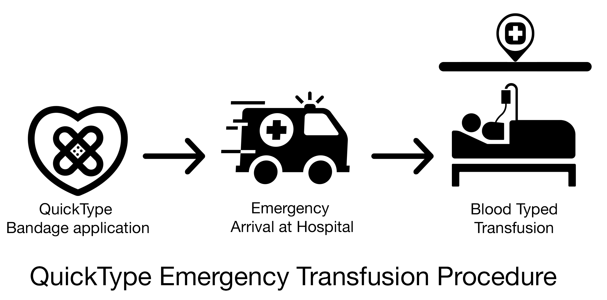
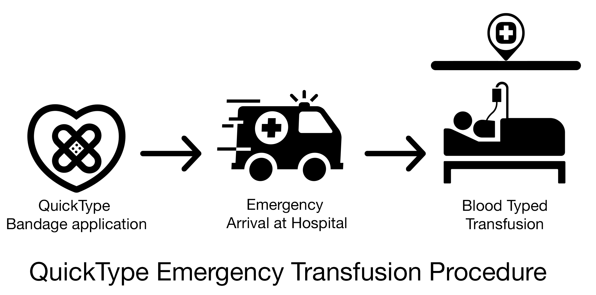

C L A I R E • A P U A N
QuickType: Smart Bandages
NIH R41 Proposal Co-Author
Thayer School of Engineering, Hanover, NH
2019
Problem: The rate of mislabelled samples and miscollected blood samples, also known as Wrong Blood in Tube Errors (WIBTs), is 1,000–10,000-fold more frequent than the risk of viral infection. In addition, current crossmatching techniques require an in-hospital lab test and around 30 minutes. For this reason, emergency transfusions utilize O- type blood for transfusions, which creates a constant shortage of O- blood.
I co-authored a detailed, technical design using secondary research of a smart bandage that will staunch bleeding from traumatic hemorrhage wounds and simultaneously determine and label blood type to reduce WIBTs and reduce the need for O- blood donations.
Adaptable to various pre-hospital settings
Colorimetric readout in less than 5 min
Competitive with current emergency bandages and dressings
 
